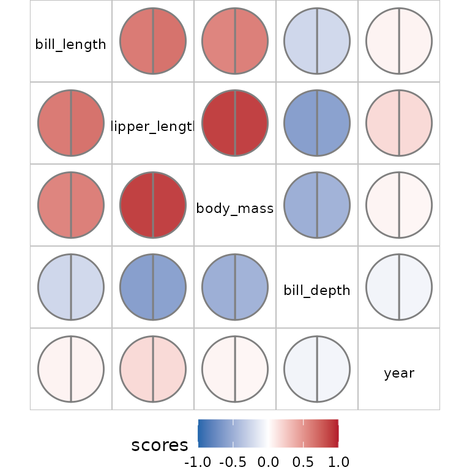

There are many other packages for visualising correlation or similar
information. Here we show how pairwise structures produced
by bullseye can be displayed with these visualisations
provided by these packages.
Conversely, we show how correlation or correlation-like information
provided by other packages can be displayed using
bullseye.
# install.packages("palmerpenguins")
library(bullseye)
library(dplyr)
library(ggplot2)
peng <-
rename(palmerpenguins::penguins,
bill_length=bill_length_mm,
bill_depth=bill_depth_mm,
flipper_length=flipper_length_mm,
body_mass=body_mass_g)Using data structures from bullseye with other
packages
corrplot visualisations
The package corrplot provides correlation displays in
matrix layout. Standard usage builds a correlation matrix with
cor and plots it with corrplot.
To show bullseye results:
sc <- pairwise_scores(peng) # includes factors, unlike `cor`
corrplot::corrplot(as.matrix(sc), diag=FALSE)
# corrplot::corrplot(as.matrix(sc, default=1)) # to show 1 along the diagoonal
linkspotter visualisations
The linkspotter package calculates and visualizes
association for numeric and factor variables using a network layout
plot. The nodes show the variables and the edges represent the measure
of association between pair of variables. Absolute correlation is mapped
to edge width.
linkspotter::linkspotterGraphOnMatrix(as.data.frame(as.matrix(sc)),minCor=0.7)Using bullseye visualisations with other packages.
The correlation package offers calculation of a variety
of correlations, including partial correlations, Bayesian correlations,
multilevel correlations, polychoric correlations, biweight, percentage
bend or Sheperd’s Pi correlations, distance correlation and more. The
output data structure is a tidy dataframe with a correlation value and
correlation tests for variable pairs for which the correlation method is
defined. This is converted to pairwise via the
as.pairwise method.
# install.packages("correlation")
library(correlation)
sc_cor <- correlation(peng, method = "distance")
plot(as.pairwise(sc_cor))
Multiple measures from correlation can also be used:
sc_multi<- bind_rows(
as.pairwise(correlation(peng, method = "pearson")),
as.pairwise(correlation(peng, method = "biweight")))
plot(sc_multi)
Using other visualisations with bullseye results.
In this example we compare ace and nmi measures for the penguin data
pm <- pairwise_multi(peng)
tidyr::pivot_wider(pm, names_from=score, values_from = value) |>
ggplot(aes(x=nmi, y=ace))+ geom_point()